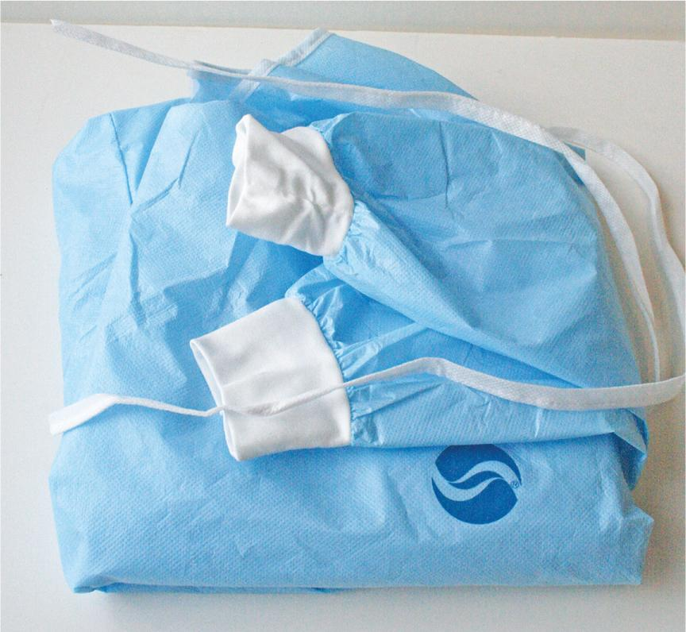
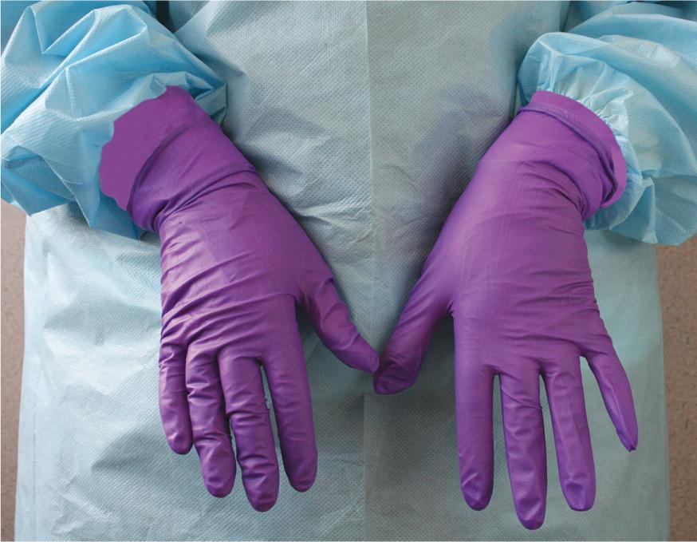
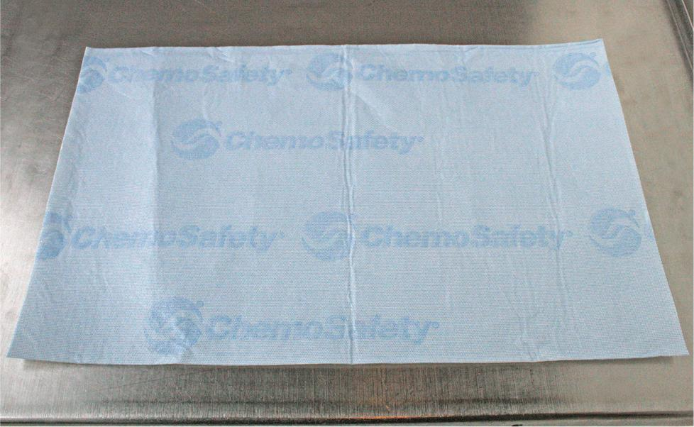
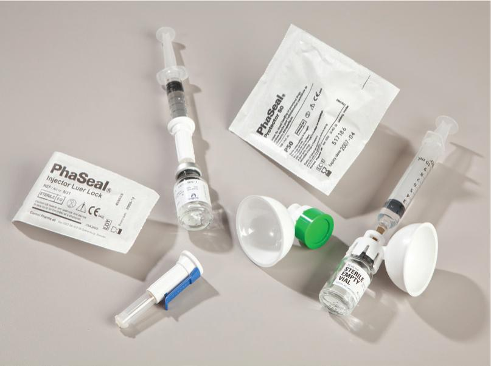
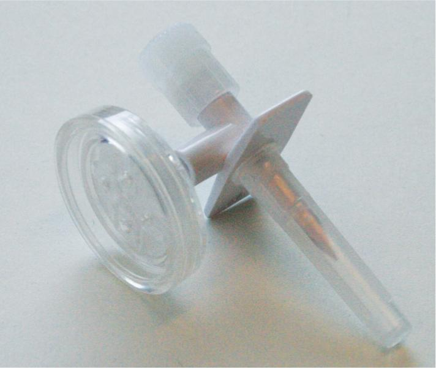
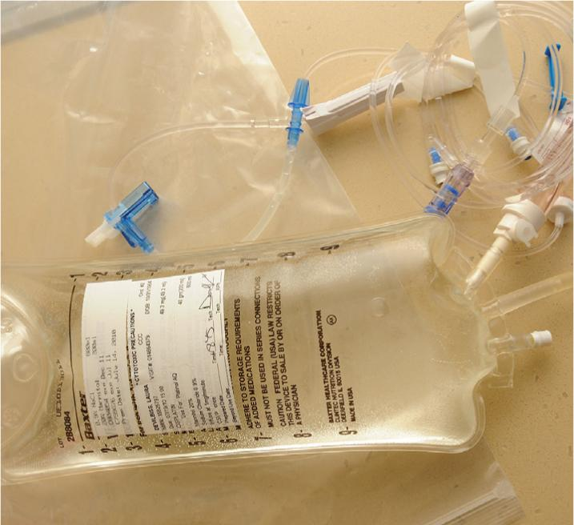
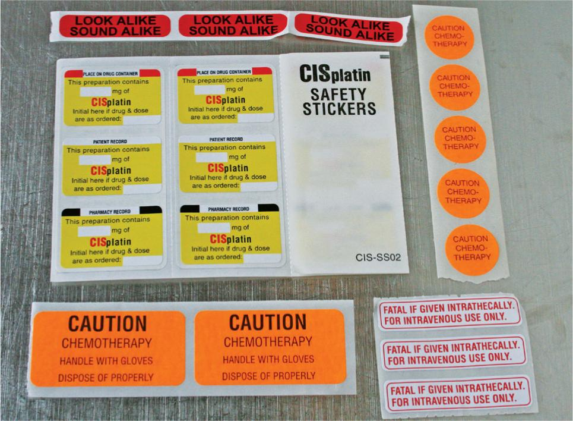
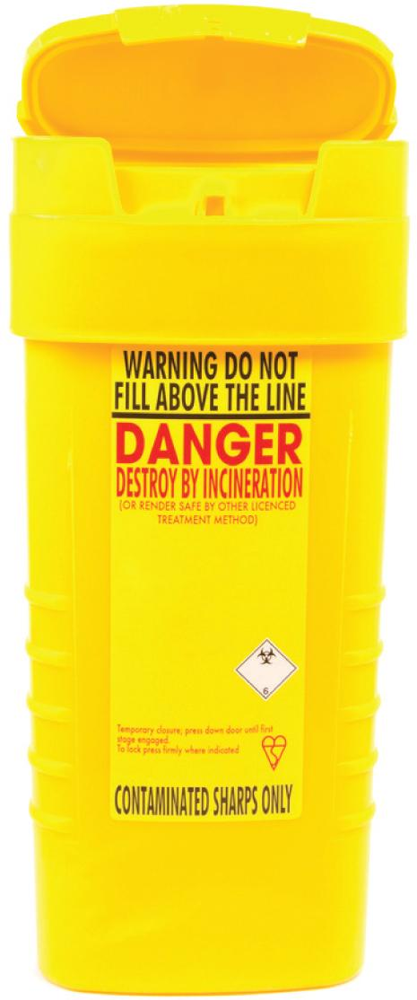

PART 2: TRAINING
Before performing this lab, preview the accompanying Chapter 16 Procedural Lab Competency Assessment Checklist in Appendix B.
16.13 Understand the Resources and Supplies
In addition to the requirements described in USP <797>, sterile compounding personnel who prepare chemotherapy must also comply with USP <800>, which adds additional requirements specific to HDs. This chapter and the corresponding procedural lab provide equipment, supplies, and procedures that are in alignment with the standards set forth in both USP <797> and USP <800>.
Essential Supplies
Most chemotherapy sterile compounding procedures require the same essential supply items to be available for use in both the anteroom and the HD buffer room. For the anteroom, these supplies include foot and head garb that consists of low-lint shoe covers; low-lint head covers and (if needed) facial hair covers; face masks; and reusable goggles when eye protection is needed. Hand hygiene supplies include soap in a nonrefillable container; disposable nail cleaners; low-lint, disposable towels or wipers; an alcohol-based hand rub; and sterile 70% isopropyl alcohol (IPA). Other garbing supplies include low-lint garments (gowns or coveralls); disposable, seamless chemotherapy gowns that close in the back; and sterile, powder-free, disposable chemotherapy gloves.
For the HD buffer room, supplies include low-lint wipers and agents required for deactivation, decontamination, cleaning, and disinfection of the C–PEC. Sterile 70% IPA is also needed to wipe sterile chemotherapy gloves and surfaces. A pen is needed for marking vials and may be needed for paper documentation. Depending on a facility’s SOPs, sterile compounding personnel may apply an alcohol-based hand rub and don sterile gloves in the HD buffer room, instead of the anteroom. If so, these essential supply items must be available for use in the HD buffer room. Tools and agents to deactivate, decontaminate, clean, and disinfect the cleanroom suite are needed, as well as HD waste containers. Facilities may also choose to use carts or tables to hold supply items.
Procedure-Specific Supplies
In addition to the essential supplies listed previously, each sterile compounding procedure requires supply items specific to the procedure being performed. The type, number, and amount of procedure-specific supply items are determined by sterile compounding personnel prior to performing the procedure, based on information provided on the CSP label and the chemotherapy drug label. The CSP label identifies the IV base solution type, strength, and volume. After reading these labels, sterile compounding personnel perform one or more calculations that reveal the amount of the drug needed to prepare the CSP. This information, in turn, dictates the number, size, and type of syringes needed for the procedure. Personnel should select syringes to accommodate the volume of the chemotherapy medication and, if applicable, the diluent needed to reconstitute the chemotherapy medication, if the medication is supplied in a powdered form.
Most chemotherapy sterile compounding procedures require the use of chemotherapy drug vials, an IV bag or other dispensing device, a CSTD, syringes, needles, and sterile 70% IPA swabs. If appropriate, sterile compounding personnel should obtain tamper-evident, sterile, adhesive seals. This type of seal is applied to the injection port of an IV bag or across the needle cap of a syringe as a safety measure.
Chemotherapy Supplies
The process of compounding chemotherapy CSPs involves the manipulation of syringes and needles as well as vials and IV base solutions. Additionally, chemotherapy procedures require specialized supplies, including a chemotherapy gown; additional shoe covers; chemotherapy gloves; goggles (when there is a risk for spills or splashes); a plastic-backed preparation mat, commonly referred to as a chemotherapy compounding mat; a CSTD or a chemotherapy dispensing pin; an IV solution bag and tubing; chemotherapy auxiliary warning labels; a chemotherapy transport bag; chemotherapy sharps containers; sterile 70% IPA in a pour bottle; and agents for deactivation, decontamination, cleaning, and disinfection. The preparation of chemotherapy CSPs also requires the use of a biological safety cabinet (BSC) with a vertical airflow. Familiarity with the appearances of these items as well as specific handling requirements is essential to chemotherapy sterile compounding procedures.
Chemotherapy Gown
A chemotherapy gown is a single-use, seamless gown whose material resists permeability by HDs. This type of gown must close in the back and have long sleeves with wrist-hugging cuffs.
In practice, sterile compounding personnel don a chemotherapy gown before entering the HD buffer room or C-SCA. Once worn in an HD environment, this gown may not be worn in a non-HD area.
A chemotherapy gown must be changed per the manufacturer’s instructions. If no instructions are provided by the manufacturer, personnel must change the gown every two to three hours or immediately after a HD spill or splash.

At the completion of chemotherapy compounding, sterile compounding personnel must remove the gown before leaving the HD buffer room and discard the gown into a chemotherapy waste container. To remove a chemotherapy gown, personnel roll the gown off the shoulders and turn the sleeves and gown inside out as the gown is removed. They should exercise care not to touch the exterior surface of the gown’s sleeves or front during removal.
Additional Shoe Covers
A second pair of shoe covers must be donned before entering an HD buffer room or C-SCA and must be removed when exiting. Shoe covers worn in HD handling areas must not be worn in non-HD areas.
Chemotherapy Gloves
Two pairs of powder-free chemotherapy gloves that meet American Society for Testing and Materials (ASTM) standard D6978 (or its successor) are required to be worn by HD compounding personnel in HD compounding and cleaning areas. The outer gloves must be sterile during compounding procedures.
To perform this double-gloving procedure, HD compounding personnel must follow the standard gloving procedure for the first pair of chemotherapy gloves. After donning the first pair of gloves, personnel must ensure that the cuffs of the gloves are tucked under the cuffs of the chemotherapy gown. Next, personnel must don a second pair of chemotherapy gloves, following the same gloving procedure. Once the second pair of gloves are in place, personnel must ensure that the cuffs of the outer gloves are placed over the cuffs of the chemotherapy gown.

HD compounding personnel must change their chemotherapy gloves if they are torn, punctured, or contaminated. In addition, they must change their gloves every 30 minutes or as recommended by the gloves’ manufacturers.
To remove each glove, personnel must roll down the glove from the wrist cuff, turning it inside out in the process. They should avoid touching the fingers of the glove during the removal and should discard each glove into the chemotherapy waste container. Finally, personnel should wash their hands with soap and water.
Chemotherapy Eye and Face Protection
Sterile compounding personnel must wear appropriate eye and face protection when there is a risk for HD spills or splashes and when cleaning HD areas. For eye protection, they must wear goggles, or a full-face mask respirator, not eyeglasses or safety glasses. Goggles and full-face mask respirators must be decontaminated and cleaned after each use. If additional protection is required, personnel must use a disposable face shield. After HD compounding, personnel should discard the face shield in the appropriate waste container.
Plastic-Backed Preparation Mat
A plastic-backed preparation mat, often referred to by personnel as a chemotherapy compounding mat or simply a chemo mat, is a thin mat, approximately 12" × 18". One side of the mat has an absorbent material to soak up potential liquid spills within a BSC. The other side of the mat is constructed of a low-permeability material to prevent liquid from soaking through to the BSC work surface. Prior to performing chemotherapy sterile compounding in a BSC, personnel center the plastic-backed preparation mat on the work surface of the BSC and leave it there during the entire compounding procedure. Upon completion of the compounding process, personnel discard the mat into the chemotherapy waste container located in the HD buffer room.

Closed-System Transfer Device
A closed-system transfer device (CSTD) is a small, disposable device that may be used to safely add or withdraw fluid from a vial into a syringe, or to inject fluid from a syringe into an IV or IVPB bag. A CSTD should be used during HD compounding activities when the dosage form allows—for example, when compounding with standard-size vials and syringes. This type of transfer device has a sealed pathway that provides sterile compounding personnel with protection from exposure to potentially toxic, aerosolized chemotherapy solutions. Consequently, HDs can be drawn up with less risk to the compounder. There are two types of CSTDs: an injector Luer-lock expansion chamber device and a protector device.

Injector Luer-Lock Expansion Chamber Device
An injector Luer-lock expansion chamber device is a CSTD consisting of a small, plastic device with a spike at one end and a Luer-lock syringe adapter at the other end. Between the spike and Luer-lock adapter, and slightly to the side, is a double-membrane expansion chamber. The expansion chamber expands or contracts to equalize air pressure within a vial during drug withdrawal procedures.
Protector Device
A protector device is a small, plastic device with a Luer-lock syringe adapter at one end and a recessed needle at the other end. This device also contains a double-membrane expansion chamber to equalize pressure. A protector device is used to inject medication into an IV or IVPB bag.
Chemotherapy Dispensing Pin
If a CSTD is not available, sterile compounding personnel use a chemotherapy dispensing pin to facilitate withdrawal from a chemotherapy drug vial. This small, plastic device has a spike at one end and a Luer-lock syringe adapter at the other end. In between the spike and the Luer-lock adapter is a small vent with a 0.22 micron filter. Sterile compounding personnel insert the spike of the chemotherapy dispensing pin into the top of a chemotherapy drug vial and attach a syringe to the Luer-lock adapter. They can then either inject fluid into the vial or withdraw fluid from the vial using the chemotherapy dispensing pin.
The chemotherapy dispensing pin provides a way to relieve pressure within the drug vial by venting air into and out of the vial via the dispensing pin’s vent. Air may be safely vented from the chemotherapy drug vial without fear of aerosolization because any drug particle or fluid escaping from the vial is trapped by the 0.22 micron filter of the chemotherapy dispensing pin.

IV Base Solution Bag
An IV base solution bag is the same type of bag used for the preparation of other LVPs or IVPBs, which is typically a bag with a tail injection port. When inserting a needle into the tail injection port of an IV bag, sterile compounding personnel should insert it directly into the injection port without regard to the position of the needle bevel and without creating any bend to the needle.
IV Tubing and Compounding Completion Supplies
Sterile, nonvented IV tubing is attached to an LVP or IVPB bag to administer the chemotherapy CSP to a patient. To prevent unintended exposure to the CSP fluid, sterile compounding personnel should attach the IV tubing to the bag and then prime the tubing before injecting the chemotherapy medication into the bag. The term prime the tubing means to run fluid from the IV base solution through the tubing until the entire tubing has been purged of air. Consequently, fluid fills the entire fluid pathway within the tubing.

Chemotherapy Auxiliary Warning Labels
Chemotherapy auxiliary warning labels must be affixed to chemotherapy CSPs and related supplies; chemotherapy transport bags and storage bins; and chemotherapy sharps containers, if these containers are not already stamped with a warning label. These auxiliary warning labels alert healthcare personnel and other chemotherapy handlers of the toxic nature of the contents so that they can take appropriate precautions for the storage, handling, administration, cleanup, and disposal of these HDs.
Some drugs require additional warning labels due to the potential for patient injury caused by incorrect administration of the medication. For example, the chemotherapy drugs vincristine and vinblastine can be fatal if administered intrathecally. Sterile compounding personnel should be aware of the chemotherapy medications that require these additional warning labels.

Chemotherapy Sharps Container
Chemotherapy sharps containers are similar to regular sharps containers in shape and function. They are rigid, plastic buckets that have snap lock plastic lids. In general, chemotherapy sharps containers are bright yellow and are labeled with a chemotherapy warning label. In contrast to red sharps containers—used solely for the disposal of needles, syringes, broken glass, and blood products—a chemotherapy sharps container is used to dispose of all waste and supply items used in chemotherapy sterile compounding. These items may be contaminated with trace amounts of HDs.
Locations of Chemotherapy Sharps Containers
Sterile compounding facilities sometimes keep a small, yellow chemotherapy sharps container on the work surface of a BSC, and a larger chemotherapy sharps container in the HD buffer room or in an area near the BSC that does not obstruct traffic or impede airflow into the cabinet. Facilities also have a large, yellow chemotherapy waste container in a designated area of the anteroom to dispose of trace-contaminated PPE.
Upon completion of sterile compounding procedures, sterile compounding personnel place the used, plastic-backed preparation mat; other chemotherapy-specific supplies (such as needles, syringes, and vials); the chemotherapy gloves, gown, and outer shoe covers; and the chemotherapy waste products (such as used IPA swabs) into chemotherapy sharps and waste containers in the HD buffer room. Once in the anteroom, personnel dispose of the inner gloves, face mask, facial hair cover (if worn), hair cover, inner shoe covers, and inner gown into the large, yellow chemotherapy sharps container in the anteroom.

Facilities that prepare large numbers of chemotherapy CSPs may have two chemotherapy sharps containers in the HD buffer room: a small, yellow container on the work surface of a BSC and a large, yellow container on the floor of the HD buffer room. The small chemotherapy sharps container allows sterile compounding personnel to dispose of needles and syringes during the compounding process, thus preventing hazardous chemicals that may have accumulated on these supplies from contaminating HD buffer room air if brought out of the BSC. The large chemotherapy sharps container or a chemotherapy waste container allows personnel to dispose of items such as chemotherapy gowns and gloves.
Disposal of Chemotherapy Sharps Containers
Procedures related to the disposal of chemotherapy sharps containers vary among facilities. For that reason, sterile compounding personnel should refer to their facility’s SOPs to determine the procedure for the disposal of chemotherapy sharps containers. In general, personnel remove the small chemotherapy sharps container within the BSC upon the completion of chemotherapy compounding procedures. They wipe down the exterior surface of the small sharps container with an appropriate agent, place the used wiper in the sharps container, and snap the lid of the container to close it. Personnel then bring the small chemotherapy sharps container into the anteroom and place it inside of the large chemotherapy sharps container. Once the large chemotherapy sharps container is full, personnel snap the plastic lid shut in preparation for transport to off-site hazardous waste disposal.
Filled, sealed chemotherapy sharps containers are removed from compounding facilities by companies specially trained in hazardous waste transportation and disposal. The hazardous waste is then transported to a specialized, off-site facility for high-temperature incineration. This method of hazardous waste disposal, which is monitored by the EPA and individual state DOTs, offers the greatest level of protection to the public and the environment.
BSC
As mentioned earlier, chemotherapy CSPs must be prepared in a C–PEC. The most common C–PEC is a biological safety cabinet (BSC). The primary differences among the three classes of BSCs are the cabinets’ venting methods and the level of protection provided for compounders and the preparation of CSPs.
Class I BSC
A Class I BSC provides protection for a compounder but does not provide a suitable, ISO Class 5 environment to prepare CSPs. This type of BSC is used for chemical manufacturing and is not appropriate for chemotherapy sterile compounding.
Class II BSC
A Class II BSC offers protection for a compounder and an ISO Class 5 environment suitable for chemotherapy sterile compounding. This type of BSC is the most commonly used cabinet for chemotherapy sterile compounding. Within a Class II BSC are two distinct types: Type A and Type B.
Class II, Type A1 and Type A2 BSCs
Class II, Type A1 and Type A2 BSCs recirculate a percentage of the airflow within the BSC. The remaining airflow is vented outside of the facility. Due to its design, a Class II, Type A1 BSC is not suitable for use with volatile HDs.
Class II, Type B1 and Type B2 BSCs
A Class II, Type B1 BSC funnels most of the air through the exhaust HEPA filter of a BSC and into a dedicated exhaust ventilation system that empties outside of the facility. A small amount of air is recirculated within the BSC. A Class II, Type B2 BSC exhausts all of the air from within a BSC in this manner. Therefore, a Class II, Type B2 BSC offers the greatest level of protection for sterile compounding personnel.
Class III BSC
A Class III BSC is designed for the manufacture of microbiological agents and provides maximum worker protection. Generally, this type of gas-tight BSC is not used for chemotherapy sterile compounding due to the costs associated with its use.
Components of a BSC
A BSC is comprised of seven major components. These components include the air intake grills, blower, glass shield, exhaust HEPA filter, BSC’s HEPA filter, prefilter, and the work surface (see Figure 16.3).
Air Intake Grills
The air intake grills, located along the interior sides of the BSC work surface, draw contaminated air from within a BSC’s workspace away from a compounder and then force the contaminated air from the cabinet into the exhaust HEPA filter.
Blower
The blower serves to draw air into the cabinet, force the air through the BSC’s HEPA filter—thereby creating an ISO Class 5 environment—and then circulate the air out of the cabinet through the exhaust HEPA filter.
Glass Shield
The glass shield located at the front of a BSC offers additional protection for a compounder. The shield blocks the compounder’s face and upper torso from inadvertent exposure to chemotherapy medications and prevents aspiration of these toxic chemicals. The glass shield aperture should be maintained at the height recommended by the manufacturer during chemotherapy sterile compounding procedures. This height provides maximum protection for the compounder.

View long description Hide description
The labels are as follows: HEPA-filtered exhaust air vented to outside, exhaust HEPA filter, recycled air, BSC’s HEPA filter, work surface, room air enters the prefilter, prefilter, air intake grills, blower, glass shield, and dirty air.
Exhaust HEPA Filter
The exhaust HEPA filter is an important feature of a BSC. This filter removes hazardous drug contaminants generated during chemotherapy sterile compounding from the air within the BSC before the air leaves the cabinet. The exhaust HEPA filter must be recertified every six months or whenever the cabinet is moved. Recertification records must be kept in the pharmacy for the life of the BSC.
BSC’s HEPA Filter
A BSC’s HEPA filter has the same function as the HEPA filter in a laminar airflow workbench (LAFW). The filter provides a source of clean air for the preparation of CSPs, thus establishing an ISO Class 5 environment within the BSC. However, unlike an LAFW in which the HEPA filter is located at the back wall, the BSC’s HEPA filter is located in the ceiling of the cabinet. The position of the BSC’s HEPA filter means that the airflow within the cabinet blows downward or vertically from the ceiling toward the work surface. Once the HEPA-filtered air reaches the work surface, it is immediately sucked into the air intake grills and drawn away from the compounder. Like the exhaust HEPA filter, the BSC’s HEPA filter must be recertified every six months or whenever the cabinet is moved, and the recertification records must remain in the pharmacy for the life of the cabinet.
Prefilter
A BSC’s prefilter (if equipped with one) is the same in design and function as the prefilter of an LAFW. The prefilter must be replaced as recommended by the manufacturer, with the task recorded on a prefilter-replacement checklist that must be kept on file for the life of the BSC. The used prefilter is then placed into a large plastic bag, sealed shut, and labeled with a chemotherapy warning sticker. The bagged prefilter is subsequently transported to off-site hazardous waste disposal to be incinerated along with other chemotherapy waste.
Work Surface
A work surface of a BSC has the same function and location as the work surface of an LAFW but is unique in that it is removable. The area underneath the work surface must be deactivated, decontaminated, cleaned, and disinfected at least monthly. Due to the airflow within the BSC, the direct compounding area (DCA) is four inches above the work surface.
Deactivating, Decontaminating, Cleaning, and Disinfecting a BSC
The cleaning and disinfection procedures for a BSC are significantly different from those procedures used for the cleaning and disinfection of an LAFW. In addition to cleaning and disinfecting a BSC, sterile compounding personnel must also deactivate and decontaminate the cabinet. Deactivation is a process that renders a drug inactive, whereas decontamination is a process used to remove HD residue from a surface. The variances are due to the different components as well as the airflow movement within the cabinet.
The vertical airflow dictates the order and direction and requires the compounder to move from the area closest to the HEPA filter—in this case, the ceiling of a BSC—toward the parts of a BSC farthest away from the HEPA filter. Because HDs are prepared within a BSC, additional precautions must be taken to perform these actions in a manner that protects the compounder. Sterile compounding personnel should refer to the website of the American Society for Health-System Pharmacists (ASHP) for general guidelines for deactivating, decontaminating, cleaning, and disinfecting a BSC.
Class II, Types A1 and A2 BSCs may be manufactured in several different configurations. For example, in some BSCs, the prefilter is located at the top of the BSC, whereas in others it is located near the bottom of the BSC, under the work surface. Most BSCs have removable work surfaces to allow for deactivating, decontaminating, cleaning, and disinfecting procedures under the intake grills or alarm systems that alert compounders to high contaminant levels within the cabinets. In light of these variables, it is vital that all sterile compounding personnel understand the operation; use; and deactivation, decontamination, cleaning, and disinfection procedures of the BSC. Guidelines for specific BSC operation and maintenance information can be found in the manufacturers’ instruction manuals.
Requirements for the Selection and Handling of Chemotherapy Supplies
Unlike other sterile compounding procedures, the compounding of chemotherapy CSPs has unique requirements for supply items. These requirements address the selection of supplies and the handling of these items within a BSC.
When selecting supplies for chemotherapy sterile compounding procedures, sterile compounding personnel should use Luer-lock syringes. Using slip-tip syringes during withdrawal or injection procedures poses an exposure risk should the needle slip off of the syringe tip. In addition, Luer-lock syringes should not be more than three-quarters full to prevent accidental leakage should the plunger become separated from the syringe barrel due to overfilling. To prevent such leakage, personnel should choose larger syringes than those typically used for nonchemotherapy sterile compounding procedures. For example, when drawing up a chemotherapy drug volume of 19 mL, personnel should use a 30 mL or 35 mL syringe. In a nonchemotherapy compounding scenario, sterile compounding personnel might use a 20 mL syringe to draw up this same volume.
The handling of supply items while working within a BSC is also unlike other sterile compounding procedures. Unlike a horizontal LAFW, the outer six-inch zone of a BSC is not considered to be an area of insufficient HEPA-filtered airflow. However, it is advisable for sterile compounding personnel to work closer to the back of a BSC (away from the opening in the glass shield) when compounding chemotherapy CSPs. Doing so avoids the air turbulence created as room air enters the cabinet through the glass shield aperture and offers the compounder greater protection from exposure to potential contaminants.
The handling of specific supply items, such as vials and needles, also differs in chemotherapy sterile compounding. Sterile compounding personnel should never use positive pressure, the milking technique, or vented needles for chemotherapy compounding procedures, as these techniques and supplies pose the risk of hazardous drug aspiration. Instead, personnel should use a CSTD, when the dosage form allows, or a chemotherapy dispensing pin to relieve air pressure during chemotherapy sterile compounding. If use of these devices is not possible, personnel need to perform negative-pressure techniques.
Identification of Critical Sites of Supply Items
Before beginning preparatory procedures in the anteroom or HD buffer room, sterile compounding personnel must recall the critical sites of the supplies. Identifying the critical site of each supply item helps to determine the proper procedure for handling the supply item within a BSC.
Critical Sites of Essential Supplies and Chemotherapy Supplies
The critical sites of essential supply items include the needle, syringe tip, and the piston plunger and inner plunger shaft of the syringe. These critical sites are supplied by their manufacturers in sterile form and should, therefore, not be swabbed with sterile 70% IPA prior to use. The critical sites of the procedure-specific supply items include the CSTD, the chemotherapy dispensing pin spike, the IV tubing spike, and the IV tubing port. The critical sites of all of these items are supplied from their manufacturers in a sterile form and should, therefore, never be swabbed with alcohol prior to use.
The critical sites of other supplies used for the Chapter 16 Procedural Lab include the injection port of the IV base solution and the vial stopper of the medication. These critical sites must be swabbed with sterile 70% IPA prior to connection to a CSTD or insertion of a needle or a chemotherapy dispensing pin spike.
Placement and Handling of Supplies
Sterile compounding personnel should exercise care in all compounding procedures to avoid touch contamination, shadowing, or incorrect placement of the critical sites of any supply item within a cabinet. Because HEPA-filtered air within a BSC flows from the cabinet ceiling downward toward the work surface, personnel must place supply items so that their critical sites receive uninterrupted airflow from the BSC’s HEPA filter. They must also adjust aseptic technique procedures as necessary so that items are positioned and manipulated in such a way that nothing passes between the BSC’s ceiling (where the HEPA filter is located) and the critical sites of the supplies. For example, when handling a vial within a BSC, sterile compounding personnel must tip the vial sideways when inserting a chemotherapy dispensing pin or needle-and-syringe unit into the vial. Turning the vial to the side ensures that neither their hand nor the supply item interrupts airflow to the top of the vial at any time.